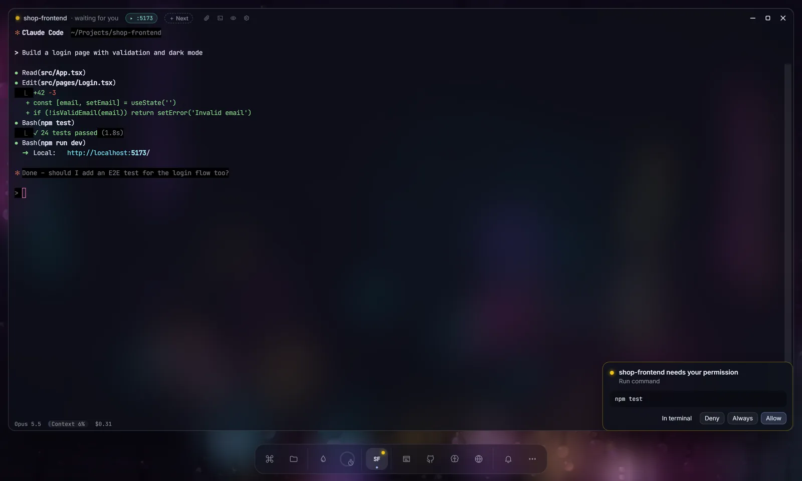
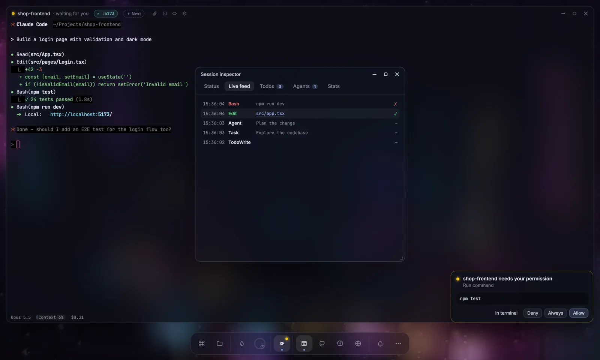
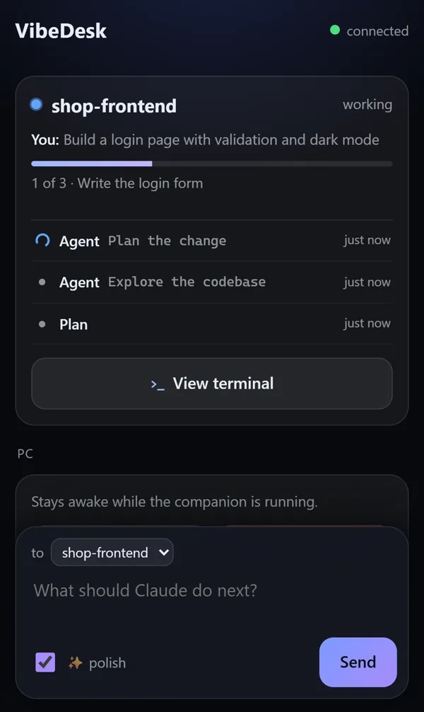
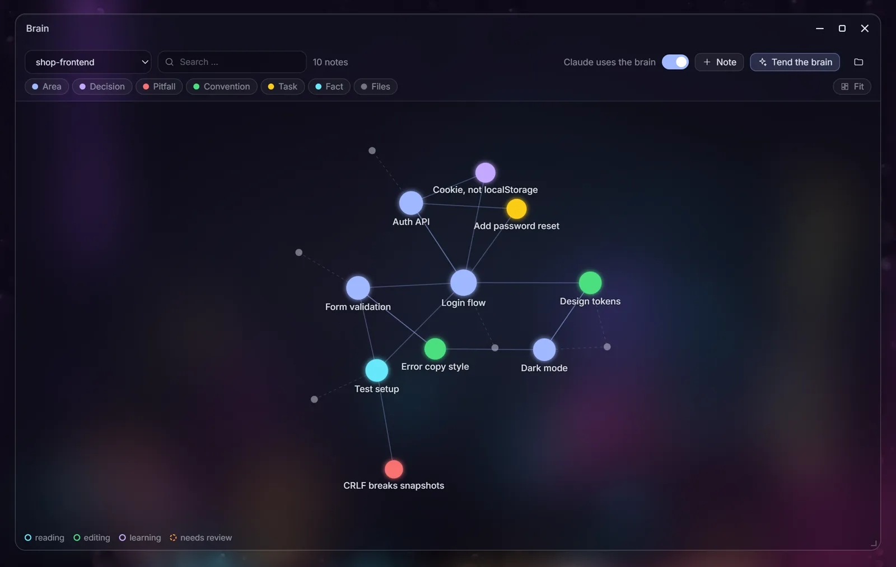
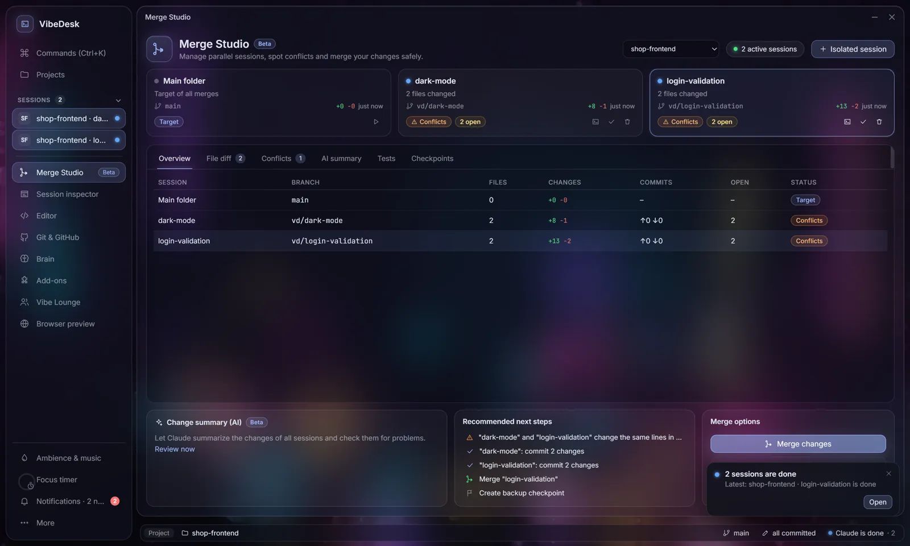
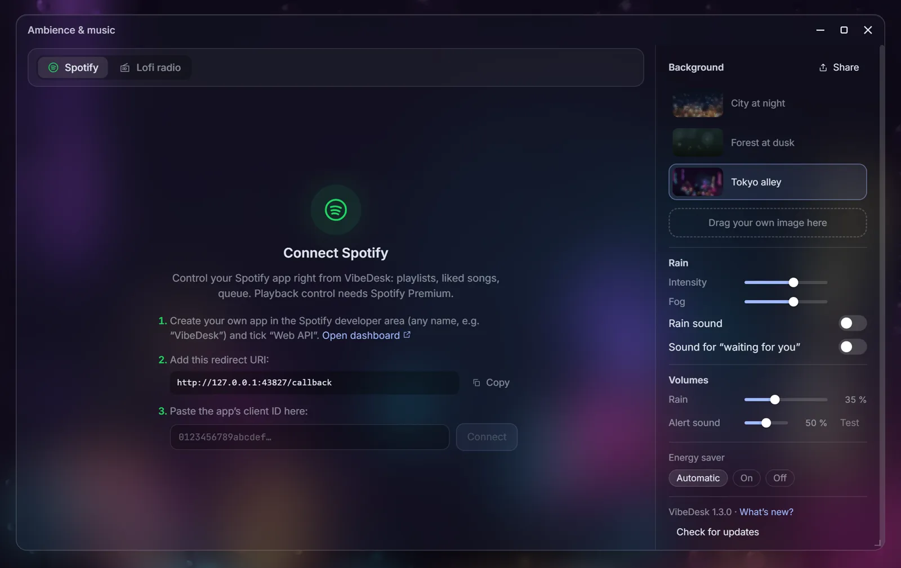
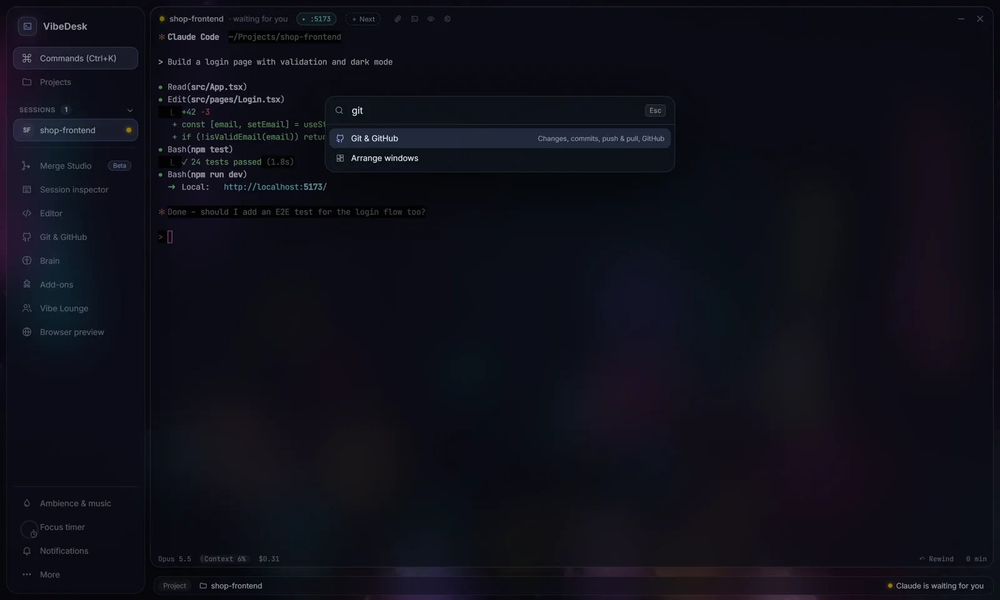
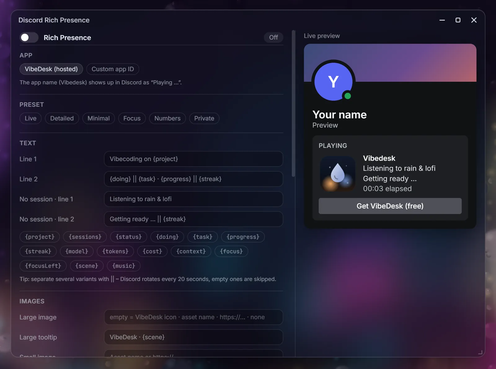
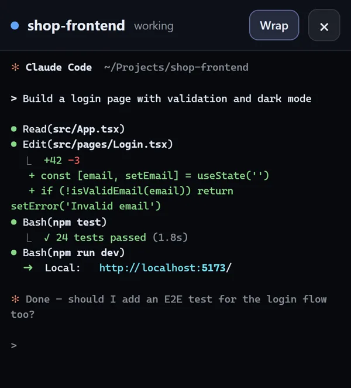

See who is waiting
Every session gets a dot in the dock. Green is working, yellow is waiting for you, blue is done.
Run several Claude Code sessions side by side. See at a glance which one is waiting for you – and answer it in one click, on your PC or your phone.
Free·Open source (MIT)·Windows 10/11·Uses your own Claude plan· Latest:

Features
Claude Code runs in real terminals. VibeDesk puts the overview around them: what each session is doing, what it is waiting for, and what it costs.
Every session gets a dot in the dock. Green is working, yellow is waiting for you, blue is done.
npm test
When Claude wants to run a command, a card appears. Allow, Always or Deny – without hunting for the terminal.
Open VibeDesk in your phone's browser, pair with a 6-digit code and answer from the kitchen. You can even follow the whole terminal live.
Explore
Each part has its own page with real screenshots and a small live demo.

Status, approval cards, a prompt queue, watchdog and auto-continue after the limit.

Approvals, live actions and the whole terminal in your phone's browser.

Project memory as linked Markdown notes, plus “About you”.

Parallel sessions in worktrees, conflict prediction, checkpoints.

Rain scenes, lofi radio, Spotify control and a focus timer.

Zen mode, a toolbox for modules and a dock that grows with you.

Editor, preview with “Point at it”, Git, palette and no-code addons.

Discord presence, Vibe Lounge, OBS overlay and Vibe Wrapped.
Calm · new
Press Ctrl + . and everything else steps back. Other sessions wait as small pills at the top, the dock returns when your mouse touches the bottom edge.
Ambience · Spotify
Control your own Spotify app right from VibeDesk – playlists, liked songs, search and the queue – or play a lofi stream without any account. Rain sound and alert sound have their own volume.
Phone companion · new
Your phone shows each session's last prompt and Claude's latest steps with checkmarks. If you allow it on the PC, it shows the complete terminal too – live, in color, with the full history.
The phone companion →
Video · 55 seconds
Three terminals, three projects – and one of them has been asking you something for fifteen minutes. This is the short version of why VibeDesk exists.
Watch the full 5-minute tour on YouTube → Download for Windows →Next release
Wishes with the most 👍 move into the next release. We ship one bigger, tested release at a time instead of many small ones.
Price
FAQ
No. VibeDesk is an independent, unofficial open-source project. It runs the real Claude Code CLI that you install and log in to yourself.
Windows 10 or 11 (64-bit), Claude Code, and a Claude Pro/Max plan or an Anthropic API key. If Node.js or Claude Code are missing, VibeDesk offers to install them on first start. Git and the GitHub CLI can be installed with one click when you need them.
Yes. VibeDesk is free and open source under the MIT license. Claude usage is billed by Anthropic through your own plan, not by VibeDesk. Costs shown in the app are estimates based on API prices.
English and German. VibeDesk follows your Windows language, and you can switch it any time in the settings.
Only for Spotify. Controlling playback through Spotify needs Premium and your own (free) Spotify developer app ID – VibeDesk walks you through it in three steps. The lofi radio works without any account.
No. VibeDesk does not touch your ~/.claude/settings.json or project settings. Sessions started in VibeDesk get a temporary settings file with its hooks, passed via --settings. Sessions you start elsewhere are not affected.
Everything, unless you turn something on. There is no telemetry, no analytics and no account. Settings and stats stay local; the project brain lives in a .vibedesk folder inside your project, “About you” only on your PC. The phone companion uses a Cloudflare quick tunnel only while it is switched on, and pairing always needs the code from your screen.
The installer is not code-signed, so SmartScreen may warn about it. Click More info → Run anyway. To check the file, compare its SHA256 checksum with the one in the release notes.
Not at the moment. VibeDesk is built for Windows 10 and 11.
Free for Windows 10 and 11.